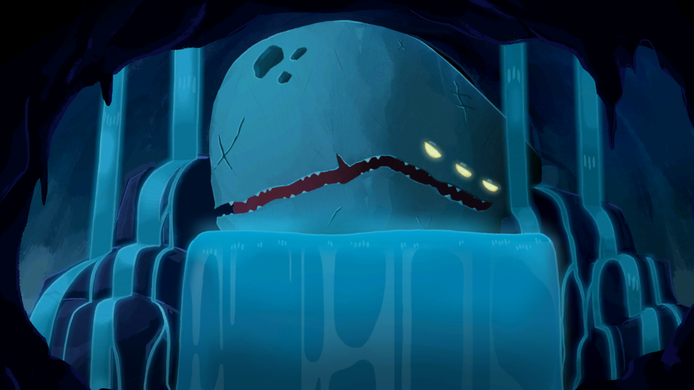
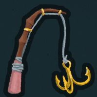
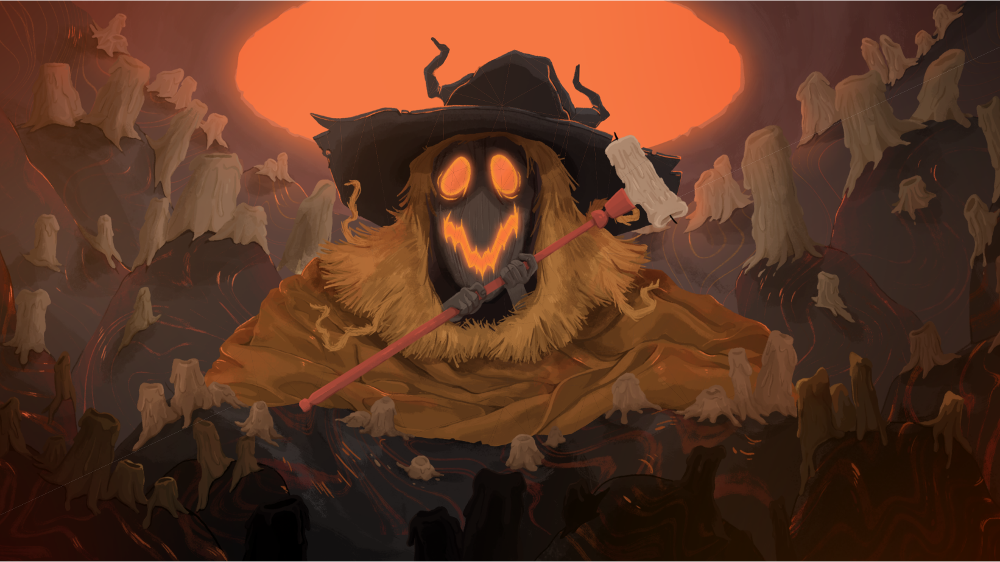
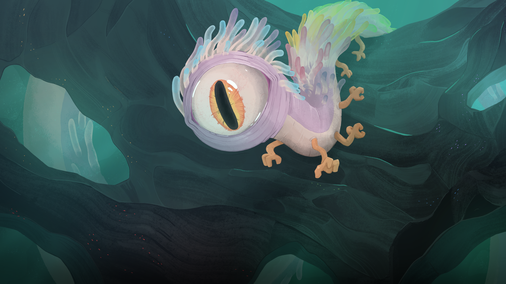
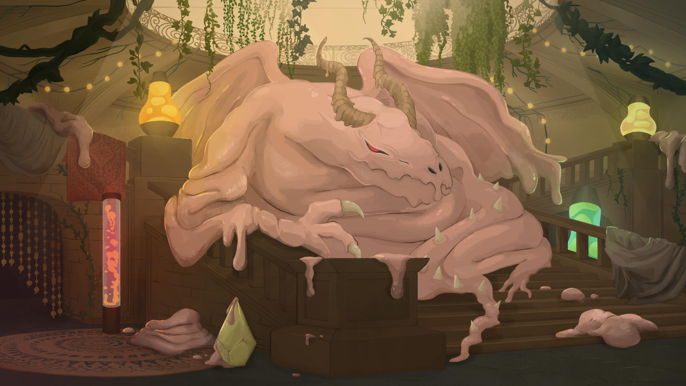
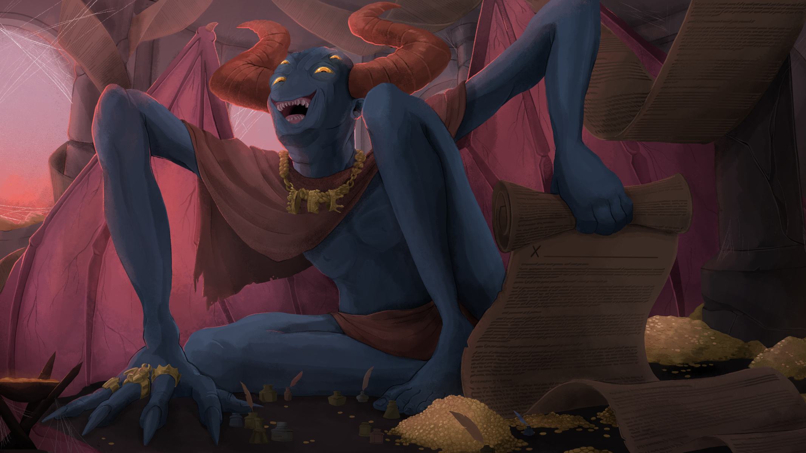
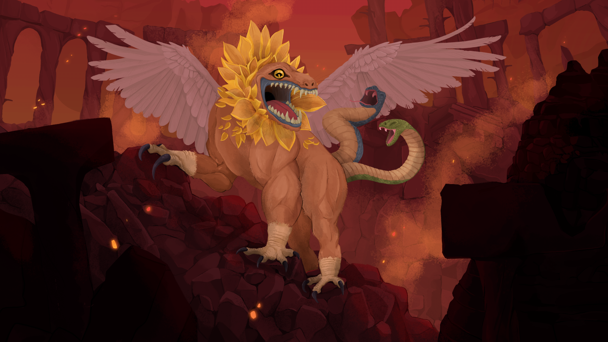
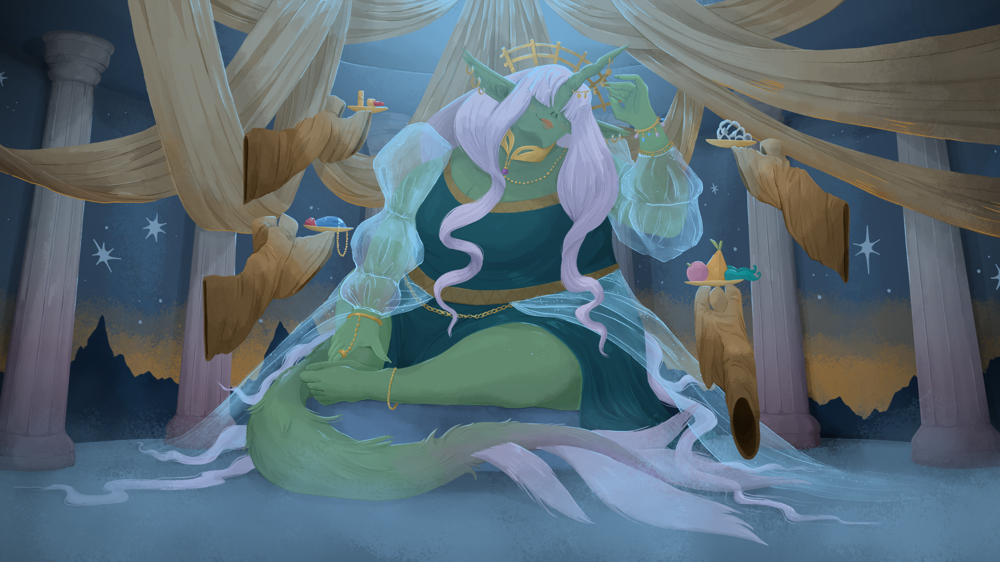
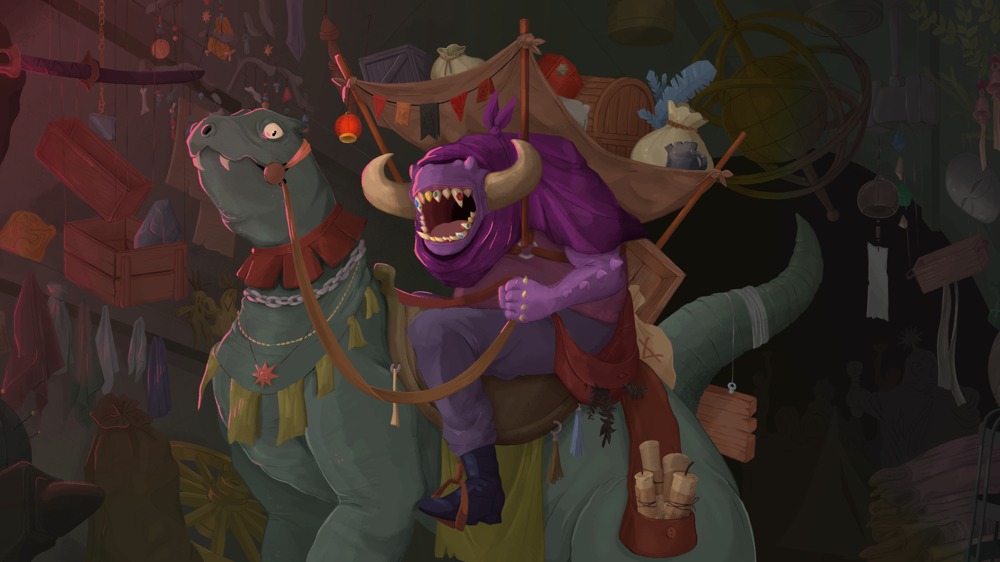

- Ces actes commencent toujours en nous introduisant avec un Ancient qui nous propose un choix de 3 reliques aléatoires, conférant des avantages considérables. Pour accéder à l'acte suivant, il vous faudra triompher de chaque salle et vaincre le Boss présent à la fin de chaque Acte
Une partie de Slay the Spire 2 se découpe en 3 segments disctincs, que l'on appelle "Actes"
Acte 1 : La Friche / les Bas-Quais
- L'acte 1 est le seul acte (à ce jour) qui propose au joueur des variations sur son début de partie.
- La Friche emmène le joueur dans un monde luxuriant, plein de vie et de créatures terrestres. Au contraire,les Bas-Quais proposent un monde submergé, peuplé de créature semi-aquatiques
- Ces deux mondes affectent les ennemis que vous allez rencontrer, à la fois, les combats classiques, mais aussi les Élites et les Boss à la fin de l'acte.
- Les Boss de la Friche regroupent le Cerf Auguste, le Prêtre de la Tribu et Vantom, tandis que ceux des Bas-Quais se prénomment le Poissâme, la Matriarche Lagavulin et le Géant de la cascade.
Acte 2 : La Ruche
Dans la Ruche, vous allez faire face à des monstres étranges, passant d'une ruche humanoïde à une mante religieuse cleptomane. Parmi les Boss, on retrouve un vers des sables, un crabe cybernétique et le démon de la connaissance
Acte 3 : La Gloire
Dans la gloire, vous allez affronter des ennemis extrêmement dangereux, car eux aussi ont du combattre pour réussir l'ascension de la Spire. Les Boss que vous pourrez affronter se nomment Clypséon, le sablier possédé, le Cobaye ou bien la Reine et son chandelier
Les Ancients :
Pour l'acte 1, il n'y a qu'un seul Ancient possible : Neow
Neow, Mère de la résurection

Neow est le seul ancien qui est garanti d'apparaître au début de l'acte 1, c'est celle qui vous accueille dans la Spire, après vous avoir ressucité à la fin de votre partie précédente. Elle propose des reliques généralement équilibrées, comme la canne a pêche

qui améliore une carte aléatoire de votre deck tous les 3 combats classiques.Pour l'acte 2, il y a 3 Anciens qui peuvent apparaître pour nous proposer leurs bénédictions :
Tezcatara, celui qui alimente la flame

Tezcatara est un ancien qui propose des reliques donnant des bonus instantanés au prix d'un coût à long terme. Un gain d'énergie immense au premier tour uniquement, ou une carte sacrifiant votre vie maximale contre de la pioche de carte et de l'énergie par exemple
Orobas, Arc-en-Ciel vivant

Orobas propose des améliorations des reliques de départ de chaque personnage, de sa capacité signature ou des manières d'obtenir les cartes de tous les personnages, peut importe celui que l'on choisi au départ.
Pael, le dragon de cire

Pour l'acte 3, il y a également 3 anciens qui sont disponibles :
Vakuu, le premier démon

Tanx, le roi des chimères

Nonupeipe, Incarnation de la fortune

Le dernier ancien est un peu spécial car après avoir été débloqué, il peut apparaitre à la fois au début de l'acte 2 mais aussi à l'acte 3 (mais jamais dans les deux dans une même partie)
Darv, le Collectionneur
